I'm currently studying nursing, which means life is usually filled with lectures, skills laboratories, clinical duties, exams, and a lot of studying.
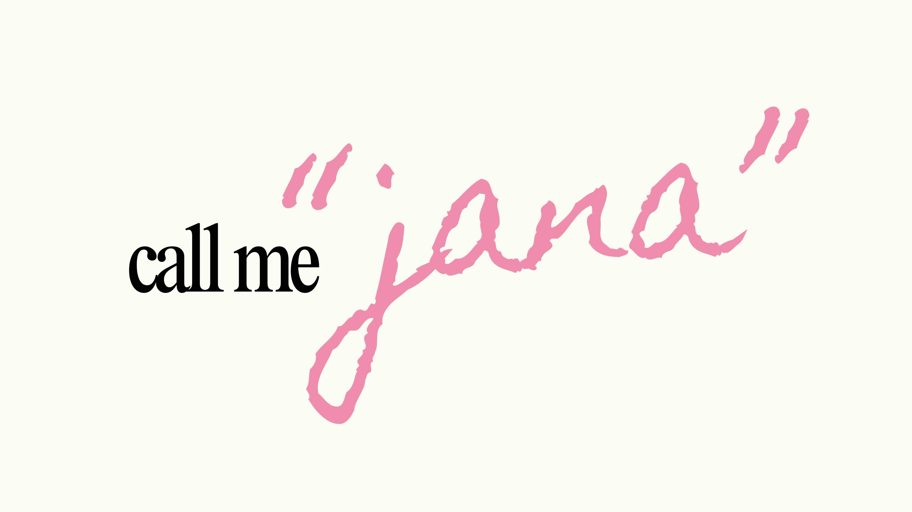
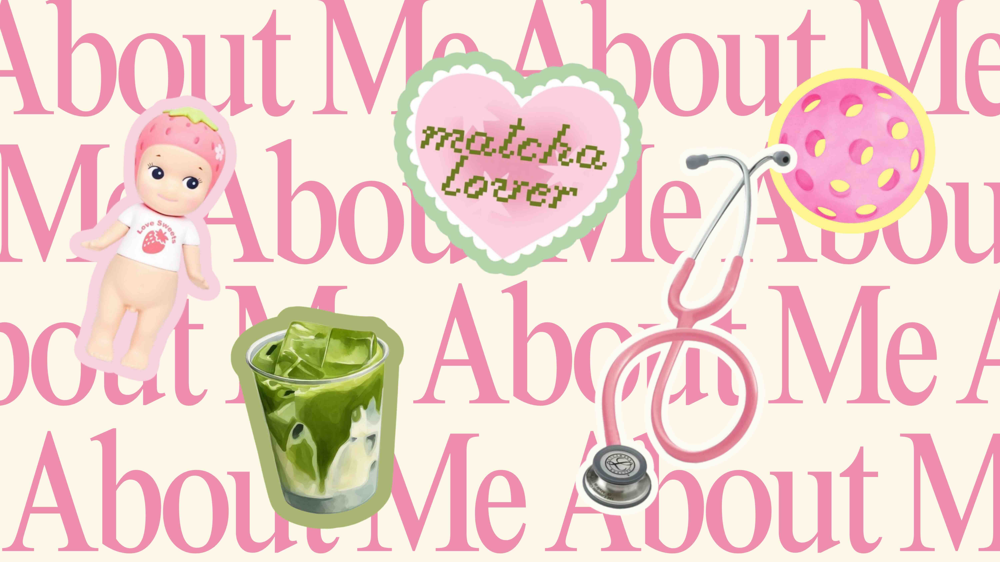
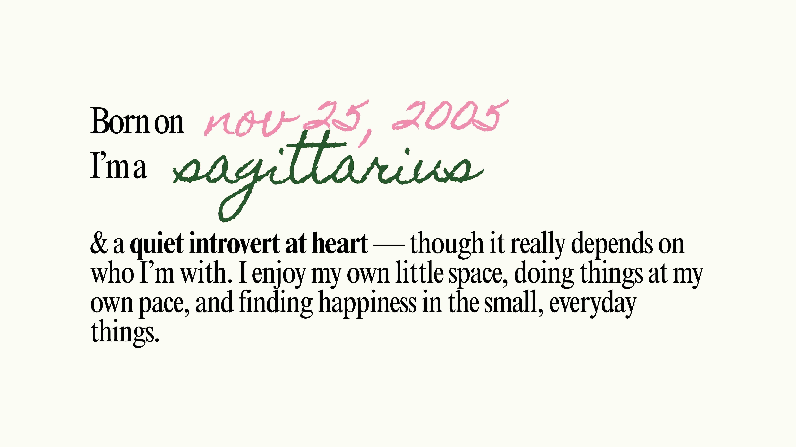
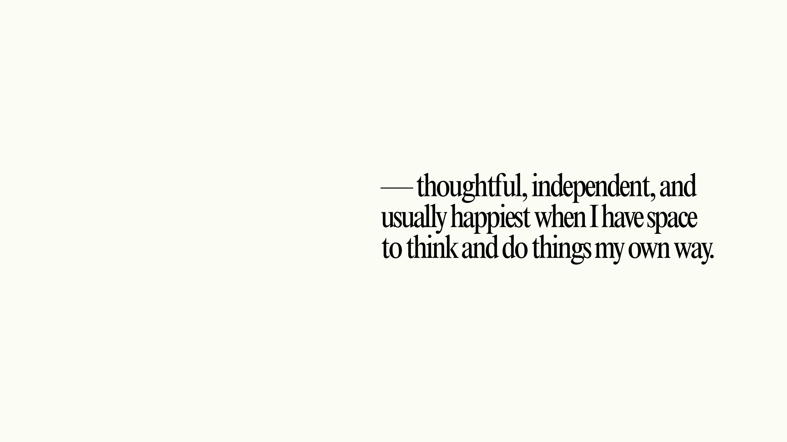
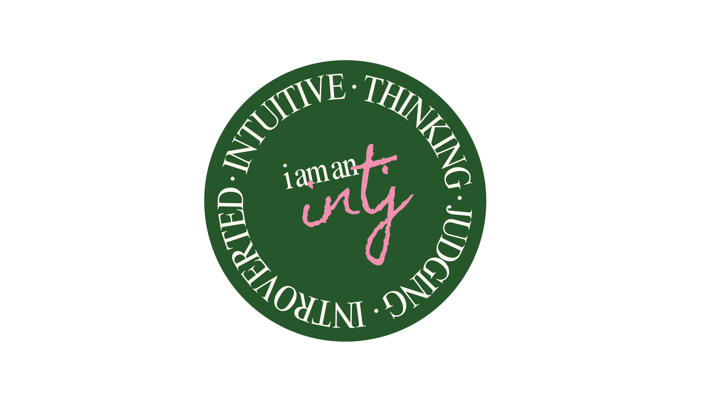
THE PART WHERE I ACTUALLY HAVE TO BE SERIOUS.
Learning to care
with intention.
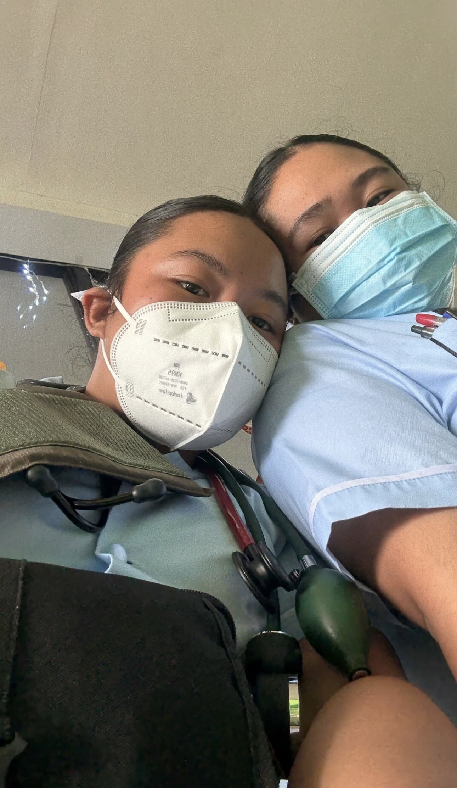
But nursing has also taught me that caring isn't just about knowing what to do. It's about how you show up for people.
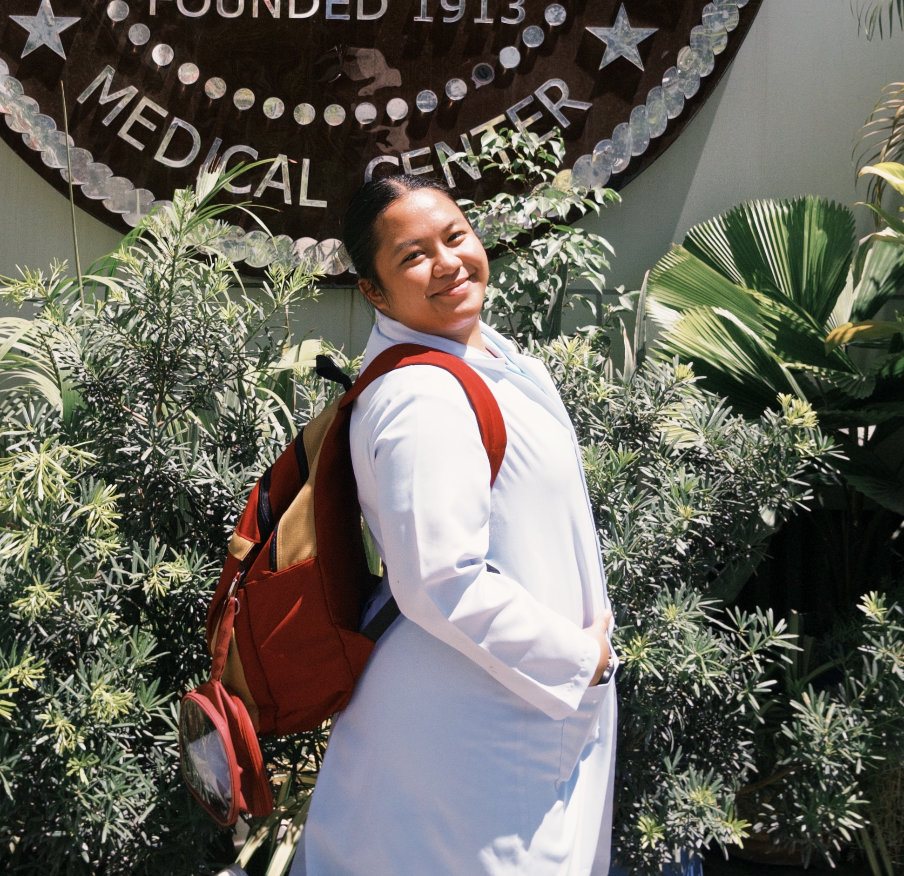
Through every lesson, return demonstration, clinical experience, and patient interaction, I'm slowly learning the kind of nurse I want to become — someone who is competent, compassionate, and present.
I'm still learning, but every experience brings me one step closer.
SIDE QUESTS
THE STUFF THAT WASN'T IN THE CURRICULUM.
A few things I've
made, tried & loved.
01
LITTLE MS MATCHA
A tiny business
with a lot of heart.
A matcha pop-up that started as an idea and somehow turned into an actual little business.
What started with “what if we made a matcha pop-up?” became branding, menu development, pricing, costing, content creation, operations, customer service, photography, and actually serving people.
I've gotten to play CEO, barista, cashier, marketer, photographer, delivery girl, and probably several other jobs along the way.
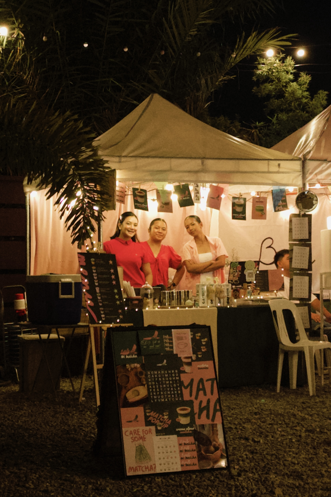
02
PICKLEBALL
Learning something
just because.
One of my newer side quests. I'm still learning the rules, working on my shots, and occasionally wondering where the ball went.
Not everything has to be something I'm immediately good at. Sometimes it's enough to have fun, move around, and try something new.
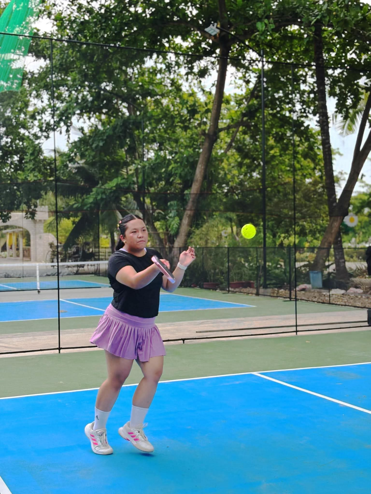
03
PHOTOGRAPHY
Little moments
worth keeping.
I like capturing little moments.
Nothing too serious — just places, food, people, details, random corners, and moments that feel worth remembering.
I like photos that feel like “this is what that day looked like.”
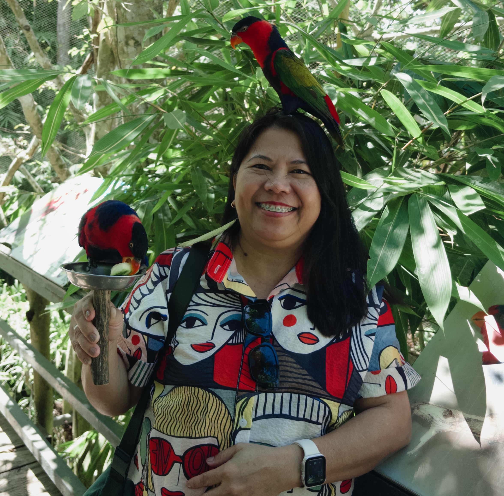
04
CREATIVE PROJECTS
Make it.
Then make it prettier.
Designing things, putting together presentations, experimenting with layouts, making concepts, creating content, and turning random ideas into something tangible.
Basically, if I can make it look a little prettier, I'll probably try.

05
TRAVEL & NEW PLACES
Go somewhere.
See what happens.
I love going somewhere I've never been before. There's something about being in a new place, trying something different, finding a cute café, taking photos, and coming home with stories that makes me happy.
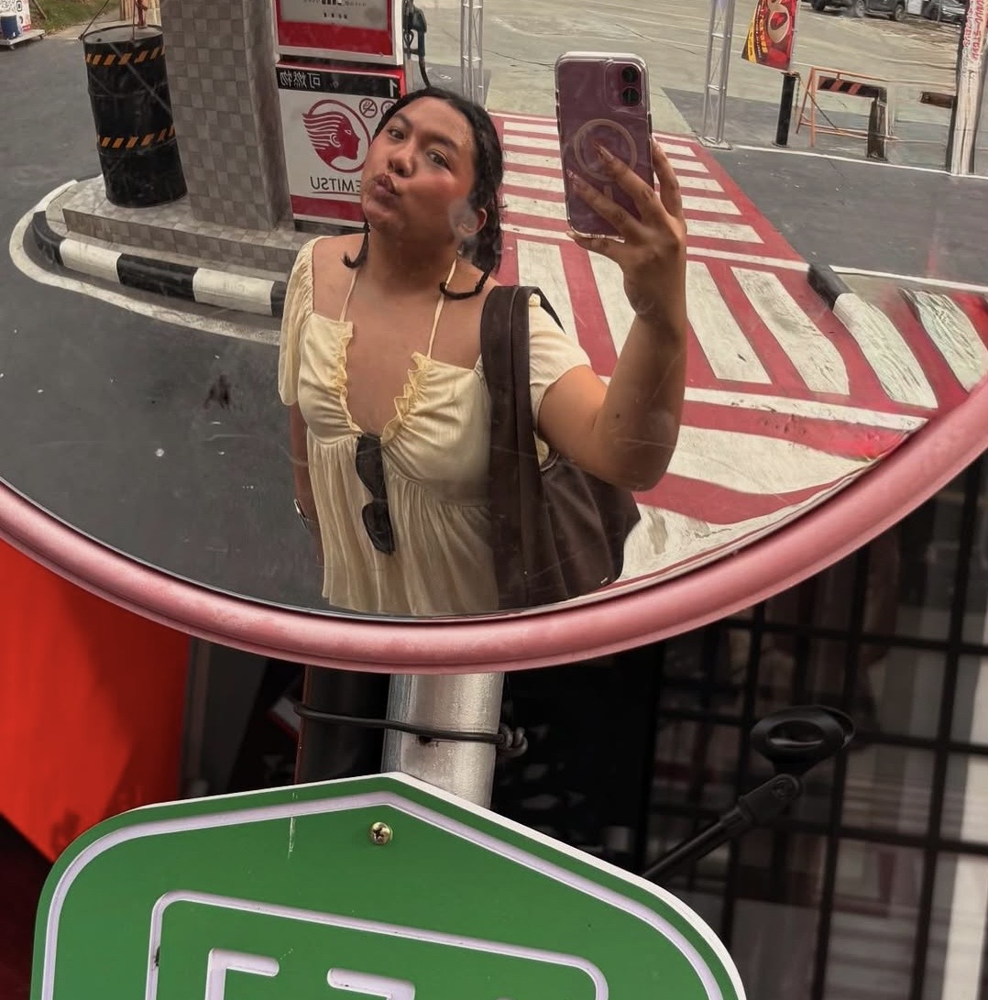
TESTIMONIALS
NICE THINGS PEOPLE HAVE SAID.
A little corner
for kind words.
A little corner for kind words from people I've worked with, created with, learned from, or crossed paths with.
“
She is easy to work with and always willing to help.
— Kiah Candado
“
She brings a lot of thought and effort into whatever she does.
— Eliza Mabayo
“
She may be quiet at first, but once she's comfortable, she's one of the easiest people to talk to.
— Alona Carumba
A LITTLE MORE OF ME
IF YOU'VE MADE IT THIS FAR...
Here's the
unofficial version.
♡
FAVORITE WAY TO SPEND A FREE DAY
Going somewhere new, getting something to drink, taking photos, and having nowhere I need to be.
DEFAULT ORDER
Probably matcha.
CURRENT SIDE QUEST
Pickleball.
MOST USED APP
Probably my Notes app.
PERSONALITY
Quiet at first. Loud once comfortable.
LEARNING STYLE
Show me. Let me try it. I'll probably remember it better.
BIGGEST GOAL
To become someone I'm proud of — both in nursing and outside of it.
LIFE PHILOSOPHY
You don't have to have everything figured out to start building something.
LET'S KEEP IN TOUCH ♡
Thanks for stopping by my little corner of the internet.
Whether you came here to see my work, get to know me, or simply look around — I'm glad you're here.
See you around! ♡ jana